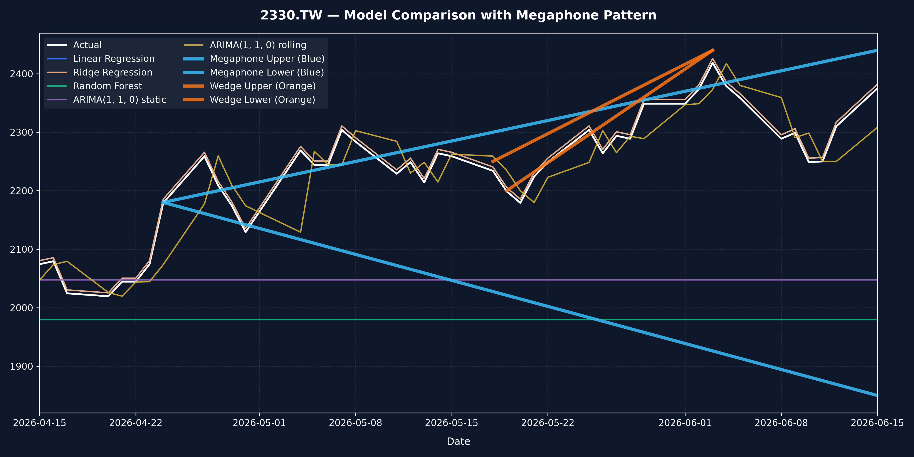
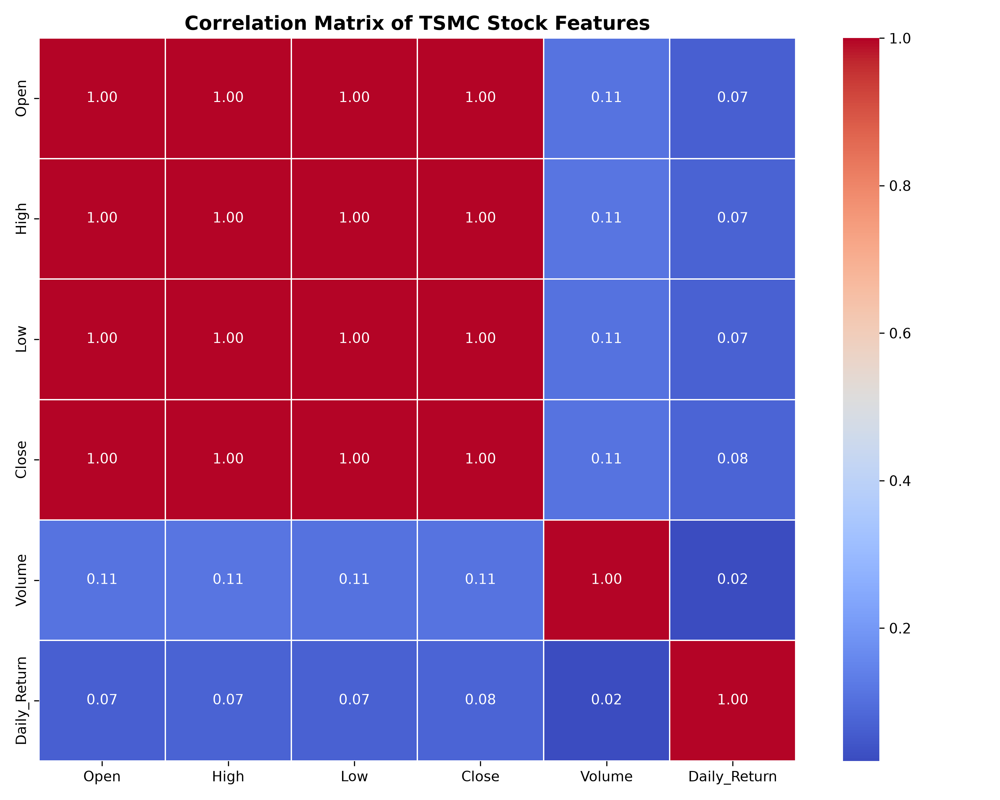
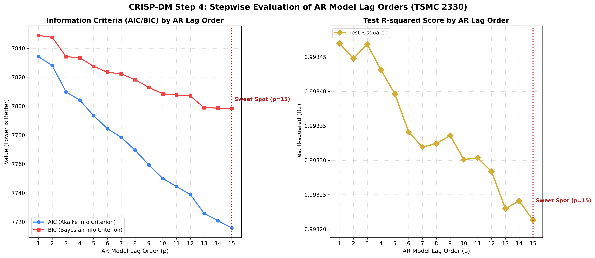
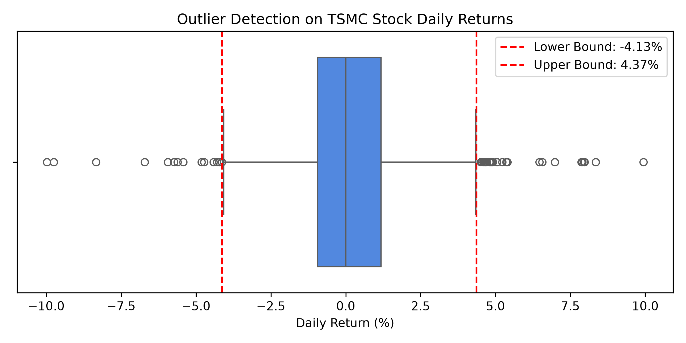
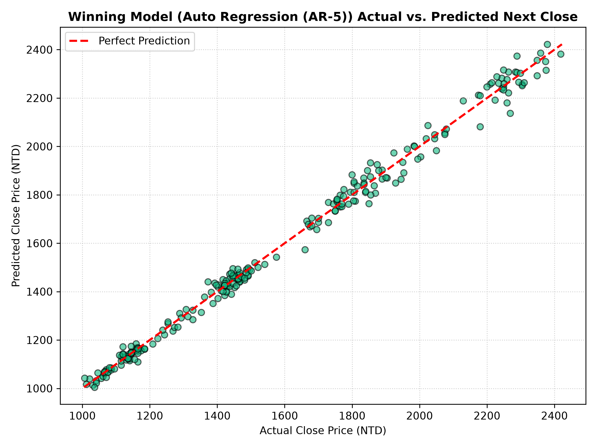

核心商業問題
如何結合機器學習迴歸模型與時間序列自迴歸模型的優勢，在台積電股價創歷史新高的趨勢下，準確預測下一個交易日的收盤價格，並揭示不同模型的外推局限性？
專案目標 (Project Goal)
本專案以下載的 1,215 筆台積電歷史日交易價格為基礎，比較機器學習（OLS、Ridge、Random Forest）與時間序列模型（ARIMA 1,1,0 靜態 vs 滾動）的預測精度，凸顯決策樹模型在外推股價時的本質局限，並選出最佳模型部署於互動網頁。
基於 CRISP-DM 流程之時間序列與機器學習迴歸模型對比分析儀表板
如何結合機器學習迴歸模型與時間序列自迴歸模型的優勢，在台積電股價創歷史新高的趨勢下，準確預測下一個交易日的收盤價格，並揭示不同模型的外推局限性？
本專案以下載的 1,215 筆台積電歷史日交易價格為基礎，比較機器學習（OLS、Ridge、Random Forest）與時間序列模型（ARIMA 1,1,0 靜態 vs 滾動）的預測精度，凸顯決策樹模型在外推股價時的本質局限，並選出最佳模型部署於互動網頁。
本數據集包含自 2021 年至 2026 年共 1,215 個交易日的台積電歷史價格。
在訓練集上對收盤價 Close 進行 ADF 檢定：
0.9537（說明原始股價序列具有非平穩性，即隨機漫步）。0.0000（顯著小於 0.05，達到平穩性）。為了防止數據洩漏並對齊圖表，我們將測試集起點設定為 2026-04-15：
本專案建立並比較了機器學習模型與時間序列模型在台積電股價預測上的表現，共實作並評估了以下五種預測方法：
我們對比了各個模型在測試集上的預測精準度（R² 越高越好，其餘指標越低越好）：
| 模型名稱 | 測試集 R² | 測試集 MAE (元台幣) | 測試集 RMSE |
|---|---|---|---|
| Linear Regression (OLS) | 0.7761 | 38.02 | 46.54 |
| Ridge Regression | 0.7761 | 38.02 | 46.54 |
| ARIMA(1, 1, 0) rolling (滾動) | 0.5466 | 55.18 | 66.23 |
| ARIMA(1, 1, 0) static (靜態) | -3.7822 | 194.00 | 215.09 |
| Random Forest | -6.9447 | 259.20 | 277.24 |
本系統已將最佳模型（Linear Regression OLS）編碼於網頁中，讓使用者能動態調整今日收盤價，即時推估次日股價！





台積電的股價就像一顆「彩色氣球」，每天都在往上飛，而且飛得比以前任何時候都還要高！
小朋友，台積電股價是一台一直往山頂開的「黃金小火車（2330）」喔！
本喵作為量化交易貓老大，為大家分析一下為什麼有些模型能預測罐罐，有些卻只能餓肚子：